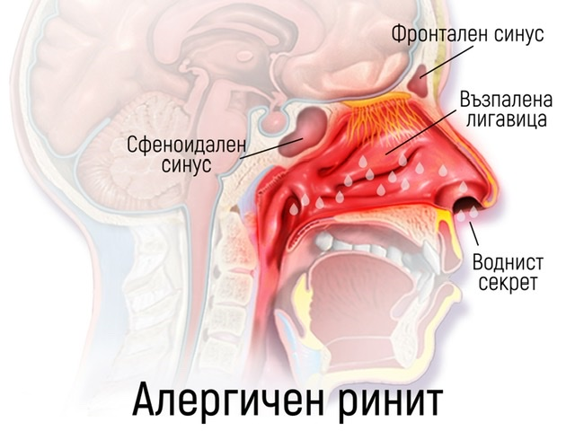

Назалните оплаквания като запушен нос, хрема, кихане и загуба на обоняние засягат все повече хора и значително влошават качеството на живот. Три състояния често вървят ръка за ръка — алергичен ринит, носна полипоза и възпаление на синусите, което в някои случаи налага функционална ендоназална синус хирургия (FESS).
В тази статия ще обясним разбираемо какви са причините, симптомите и възможностите за лечение.
Какво е алергичен ринит?
Алергичният ринит е възпаление на носната лигавица, предизвикано от алергени — например полени, прахови акари, животински пърхот или плесени. Често се проявява сезонно (сенна хрема), но може да е и целогодишен.
- Често кихане
- Водниста хрема
- Сърбеж в носа, очите, гърлото
- Запушен нос, особено нощем
- Намалено обоняние
Причината е свръхреакция на имунната система към иначе безвредни вещества.
Лечение:
- Избягване на алергени
- Антихистамини (таблетки или спрей)
- Назални кортикостероиди
- Имунотерапия при по-тежки случаи
Какво представлява носната полипоза?
Носната полипоза е хронично възпалително състояние, при което се образуват меки, неболезнени израстъци (полипи) в носната кухина или синусите. Те пречат на нормалното дишане, обоняние и дренаж на секретите.
- Постоянно запушен нос
- Загуба или отслабване на обонянието
- Главоболие, тежест в лицето
- Постназален секрет
- Хъркане и нарушен сън
Полипите често съпътстват алергичен ринит, астма или хроничен синузит.
Лечение:
- Назални кортикостероиди — първа линия на терапия
- Перорални стероиди — при по-тежки случаи
- Биологични лекарства
- Хирургично отстраняване — когато медикаментите не помагат
Какво е функционална ендоназална синус хирургия (FESS)?
Когато медикаментозното лечение не е достатъчно — например при тежка полипоза или хроничен синузит с усложнения — се препоръчва функционална ендоназална синус хирургия (FESS).
Това е минимално инвазивна операция, извършвана с помощта на ендоскоп, въведен през ноздрата. Целта е да се:
- Отстранят полипи и възпалени тъкани
- Отворят и разширят синусовите канали
- Възстанови дренажът и вентилацията
Предимства на FESS:
- Без външни разрези
- По-бързо възстановяване
- По-малко болка
- Прецизна работа с ендоскопия
Следоперативно възстановяване:
- Промивки със солев разтвор
- Прием на медикаменти
- Контролни прегледи
Какво да очакваме след лечението?
Хирургията не е крайно решение, ако не се поддържа редовно лечение и проследяване. След FESS често се налага продължителна терапия с назални кортикостероиди или други противовъзпалителни средства.
- Избягване на алергени
- Следене на симптомите и обонянието
- Редовни прегледи при УНГ специалист
Заключение
Алергичният ринит, носната полипоза и хроничните синусни проблеми често се преплитат. Добрата новина е, че съвременната медицина предлага ефективни решения — от медикаменти до минимално инвазивна хирургия. Важно е да се постави точна диагноза и да се следва индивидуализиран план за лечение.
Не отлагайте преглед при специалист, ако имате хронична назална симптоматика — дишането през носа не е лукс, а необходимост.